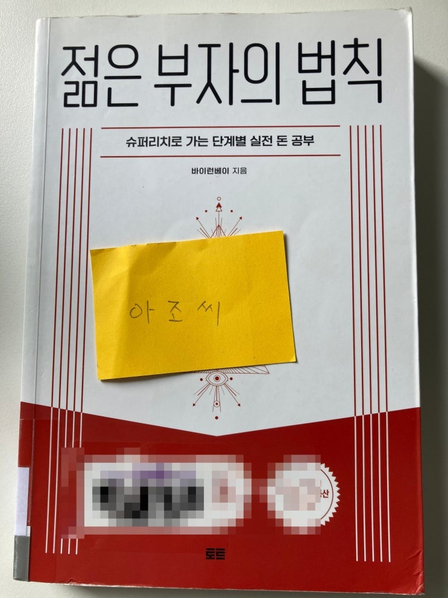
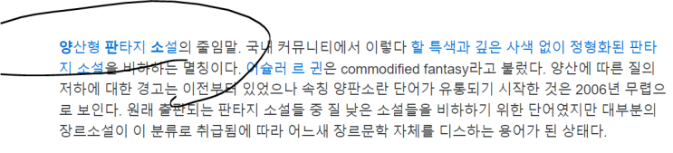

읽은지 한참 되었는데, 갑자기 잊고 있다가 생각나서 기록용으로 써봄.
예전에 한국 판타지 문학에는 "양판소"라는 개념이 있는데 이 책을 읽고 그런 느낌을 받았음.

출처 :
https://namu.wiki/w/%EC%96%91%ED%8C%90%EC%86%8C
저자 분 나보다 돈 많으니 리스펙. 역시 자본주의는 돈 많은게 깡패지.
근대 책은 좀. ㅋㅋㅋㅋㅋ
기분 전환용으로 한번 쯤 읽어볼만함.
저자 분 돈 많아서 부럽다.
이 배나온 아조씨의 건방진 리뷰를 보고 피가 끓으셨다면 네 당신 판단이 맞습니다.
제가 잘못 읽은 겁니다. 미리 도자개 박습니다. 미안합니다.
끝.